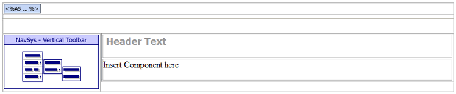

TEMPLATEINT.A5W
Purpose
We used TEMPLATEINT.A5W to simplify and speed the development process.
Description
TEMPLATEINT.A5W is a template page for internal pages. It includes a standard layout, a login test, and the navigation component. To add a body component, highlight the text 'Place page HERE' and select 'Insert Component'.
TEMPLATEINT.A5W contains the NAV_INT navigation and DLG_MAINTOPT grid components.
Links
The Page Examples > Template Internal entry of the NAV_INT navigation component calls the TEMPLATEINT.A5W page.

TEMPLATEINT.A5W in the WYSIWYG tab of the HTML Editor
Edits to the Page Source
When you look at TEMPLATEINT.A5W with the Source tab of the HTML Editor, you will see a large amount of HTML and Xbasic code. The HTML Editor placed almost all of it there automatically, as we used the WYSIWYG tab to place the tables, text, graphics, and components on the page. There are a few interesting exceptions, where we changed the page code through the Source tab.
The location = "" statement clears the menu of any highlighted entries.
|
with tmpl_NAV_MAIN location = "" componentName = "NAV_MAIN" end with |
The A5W_INCLUDE() statement is in the top row of the table. It loads TOPPAGE.A5W and displays a standard page header.
|
<body> <p> <table cellSpacing=0 cellPadding=0 width="800" border=0> <tr> <td colspan="2"> <%a5 a5w_include("toppage.a5w") %> </td> </tr> |
Page Security Information
Login Required
Groups Allowed > Accounting, Administrators, Clerical, Marketing
See Also
Web Pages?